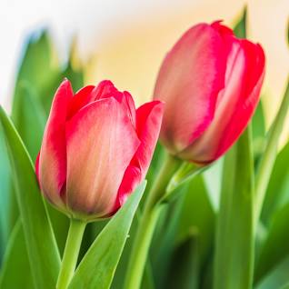

Tulips (Tulipa) are a genus of spring-blooming perennial herbaceous bulbiferous geophytes (having bulbs as storage organs). The flowers are usually large, showy and brightly coloured, generally red, pink, yellow, or white (usually in warm colours). They often have a different coloured blotch at the base of the tepals (petals and sepals, collectively), internally.

There are about 75 species, and these are divided among four subgenera. The name "tulip" is thought to be derived from a Persian word for turban, which it may have been thought to resemble by those who discovered it. Tulips originally were found in a band stretching from Southern Europe to Central Asia, but since the seventeenth century have become widely naturalised and cultivated (see map). In their natural state they are adapted to steppes and mountainous areas with temperate climates. Flowering in the spring, they become dormant in the summer once the flowers and leaves die back, emerging above ground as a shoot from the underground bulb in early spring.
There are about 75 species, and these are divided among four subgenera. The name "tulip" is thought to be derived from a Persian word for turban, which it may have been thought to resemble by those who discovered it. Tulips originally were found in a band stretching from Southern Europe to Central Asia, but since the seventeenth century have become widely naturalised and cultivated (see map). In their natural state they are adapted to steppes and mountainous areas with temperate climates.
Flowering in the spring, they become dormant in the summer once the flowers and leaves die back, emerging above ground as a shoot from the underground bulb in early spring.Text from https:/www.tulips.com